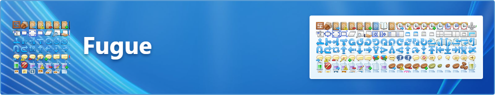

1. Add the latest collection stylesheet from jsDelivr to
the head of your document.
2. Click an icon in the gallery to copy its HTML, then paste it wherever you'd like the icon to appear.

Choose a sub-collection above, if available. Each sub-collection lists the available icons and exact icon class names. Browse the GitHub collection folder for CSS and spritesheet files. For custom or bulk downloads, use the GitHub repository.
1. Add the latest collection stylesheet from jsDelivr to
the head of your document.
2. Click an icon in the gallery to copy its HTML, then paste it wherever you'd like the icon to appear.
1. Install the Retro Icons Archive package:
npm install @claserna/retro-icons-archive
2. Import the current sub-collection stylesheet into your entry file.
3. Click an icon in the gallery to copy its HTML, then paste it wherever you'd like the icon to appear.